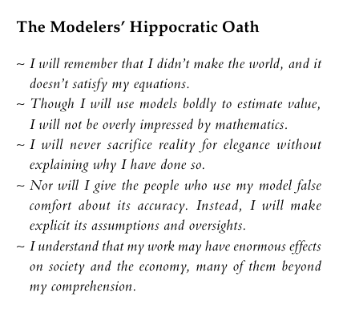

ethics
“Mathematical models should be our tools, not our masters.” - Cathy O’Neil
The Modelers’ Hippocratic Oath
In the ever-evolving landscape of technology, the need for updated laws and industry standards is imperative to ensure transparency, accountability, and ethics in how companies handle data. For now, programmers bear a significant portion of the responsibility. The first crucial step lies in raising awareness of ethics in data science and how no mathematical model can ever be a completely accurate representation of the world. However, mathematical models can and do alter the course of our world: whether that be with recidivism models deciding who goes to jail or with falsehoods in micro-targeted political ads to swing voters and influence elections (O’Neil 2017). I therefore re-emphasize the pledge penned by Emanuel Derman and Paul Wilmott during the aftermath of the nefarious model optimizations that ultimately led to the 2008 financial crisis:

References
Citation
@online{cutler2023,
author = {Victoria Cutler},
editor = {},
title = {Ethics},
date = {2023-07-21},
url = {https://victoriacutler.github.io/ethics},
langid = {en}
}